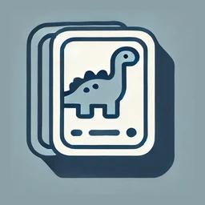
카드를 뒤집어
같은 그림을 찾으세요
Flip two cards.
Find the pair.
カードをめくって
同じ絵を見つけよう
처음 3초 동안 모든 카드를 보여 준 뒤 덮습니다. 위치를 기억해 짝을 맞추세요. 카드는 6장에서 30장까지 늘어나고, 41번째 스테이지부터는 카드가 다시 섞이거나 금방 덮이거나 잠기는 특수 규칙이 붙습니다. Every card is shown for three seconds, then turned face down. Remember where they were and match the pairs. Boards grow from 6 to 30 cards, and from stage 41 on, special rules start reshuffling, hiding and locking cards. 最初の3秒間すべてのカードを見せてから伏せます。位置を覚えてペアをそろえましょう。カードは6枚から30枚まで増え、ステージ41からはカードが混ざり直したり、すぐ伏せられたり、ロックされたりする特殊ルールが加わります。


무료 · 광고 포함 · 한국어·영어·일본어 Free · Contains ads · Korean, English, Japanese 無料・広告あり・日本語／英語／韓国語
3초 동안 보고, 기억으로 맞추세요Look for three seconds, then match from memory3秒見て、記憶でそろえよう
앱 첫 월드의 동물 카드로 만든 미니 보드입니다. 시작을 누르면 카드 12장을 3초 동안 보여 준 뒤 덮습니다.Built with the animal cards from the app's first world. Press Start to see all 12 cards for three seconds before they turn over.アプリの最初のワールドの動物カードで作ったミニボードです。スタートを押すと12枚のカードを3秒間見せてから伏せます。
익숙해질 즈음, 새 규칙이 붙습니다Just as you get the hang of it, new rules arrive慣れてきたころ、新しいルールが加わります
41번째 스테이지부터 10개 스테이지마다 새 규칙이 하나씩 나오고, 101번째부터는 두세 개가 한꺼번에 적용됩니다. 어렵다면 설정에서 특수 규칙을 끌 수 있습니다.From stage 41, a new rule arrives every ten stages; from stage 101, two or three apply at once. If it gets too hard, you can turn special rules off in Settings.ステージ41から10ステージごとに新しいルールが1つずつ登場し、ステージ101からは2〜3個が同時に適用されます。難しすぎる場合は設定で特殊ルールをオフにできます。
짝을 틀리면 남은 카드의 자리가 다시 섞입니다.Miss a pair and the remaining cards change places.ペアを外すと、残りのカードの位置が混ざり直します。
41번째 스테이지부터From stage 41ステージ41から뒤집은 카드가 1초만 보이고 다시 덮입니다.A flipped card stays visible for just one second, then flips back.めくったカードは1秒だけ見えて、また伏せられます。
51번째 스테이지부터From stage 51ステージ51から폭탄 카드가 섞여 있습니다. 폭탄은 폭탄끼리만 짝이 되고, 다른 카드와 맞추면 실수입니다.Bomb cards are mixed in. Bombs only match other bombs — pairing one with anything else counts as a mistake.爆弾カードが混ざっています。爆弾は爆弾同士でしかペアにならず、ほかのカードと合わせるとミスになります。
61번째 스테이지부터From stage 61ステージ61から잠긴 카드는 두 번 눌러야 뒤집힙니다.Locked cards take two taps to flip.ロックされたカードは2回タップしないとめくれません。
71번째 스테이지부터From stage 71ステージ71から일부 카드는 어둡게 가려져, 뒤집어도 그림이 잘 보이지 않습니다.Some cards are shaded, so their pictures are hard to see even when flipped.一部のカードは暗く覆われていて、めくっても絵がよく見えません。
81번째 스테이지부터From stage 81ステージ81から그림이 90°·180°·270° 돌아간 카드가 섞여, 같은 그림도 달라 보입니다.Some pictures are turned 90°, 180° or 270°, so a matching pair can look different.絵が90°・180°・270°回転したカードが混ざり、同じ絵でも違って見えます。
91번째 스테이지부터From stage 91ステージ91から월드 6개 · 월드마다 30개 스테이지6 worlds · 30 stages each6ワールド・各30ステージ
클래식부터 2인 대전까지From Classic to two-player Versusクラシックから対戦モードまで
옆으로 넘겨 실제 화면을 보세요.Swipe through the actual screens.横にスクロールして実際の画面をご覧ください。
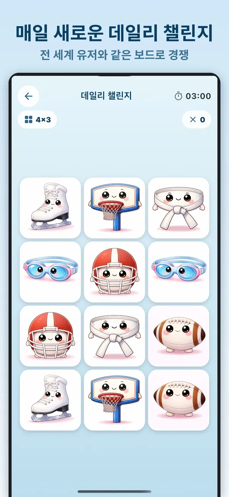
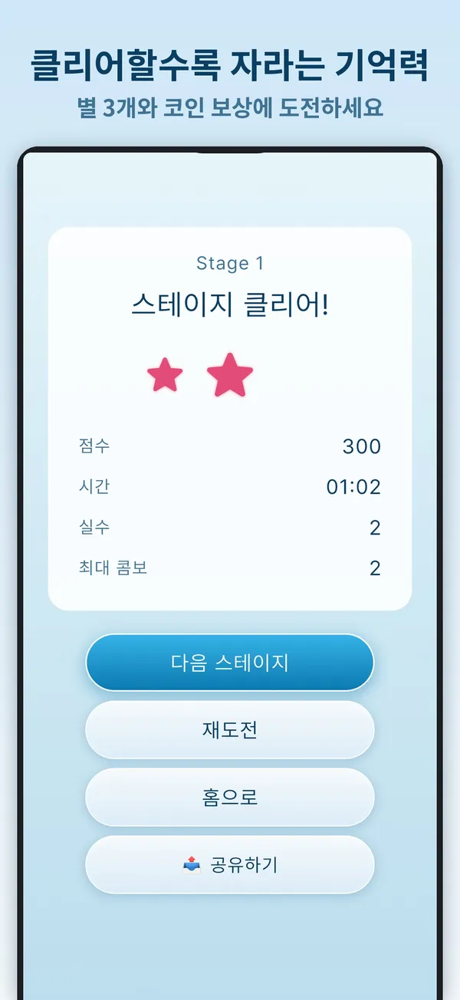
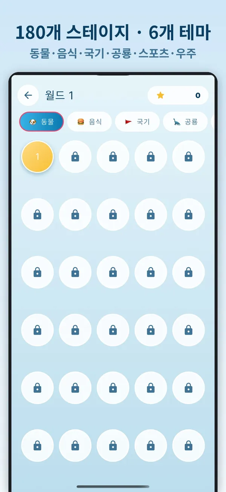
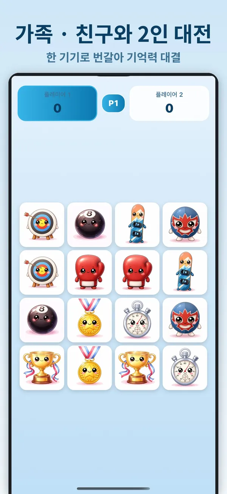
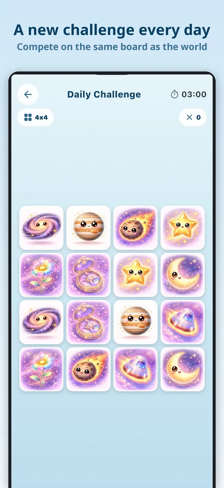
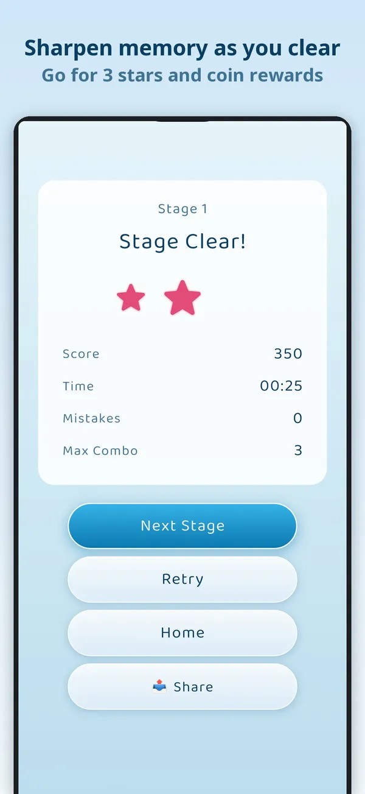
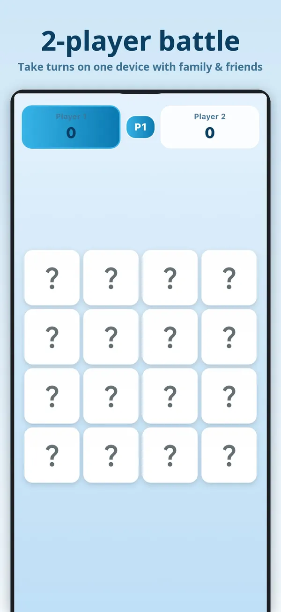
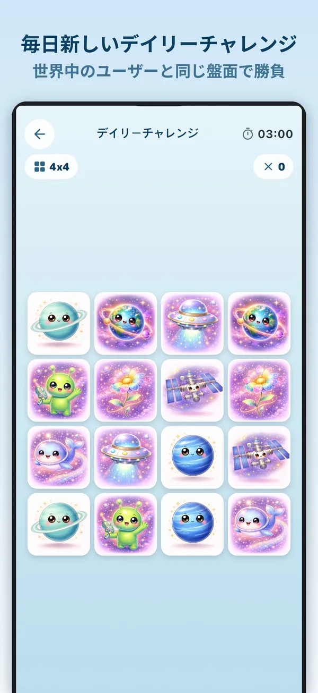
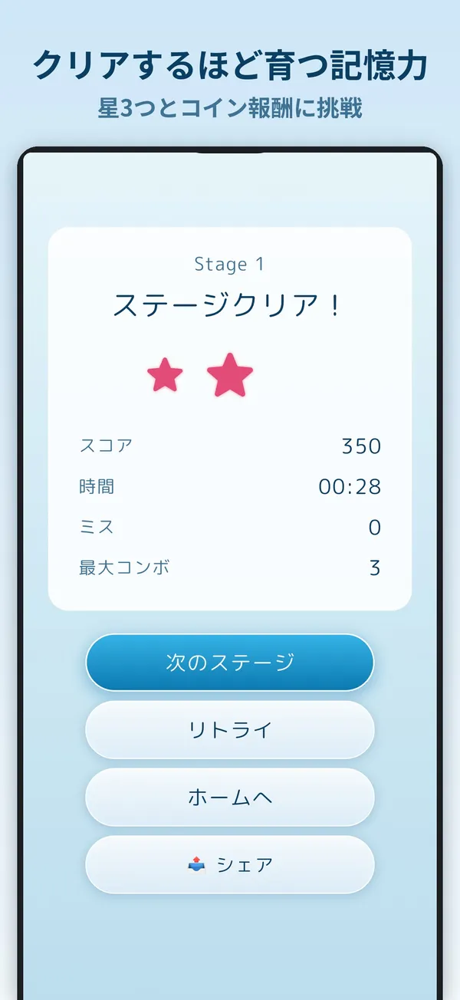
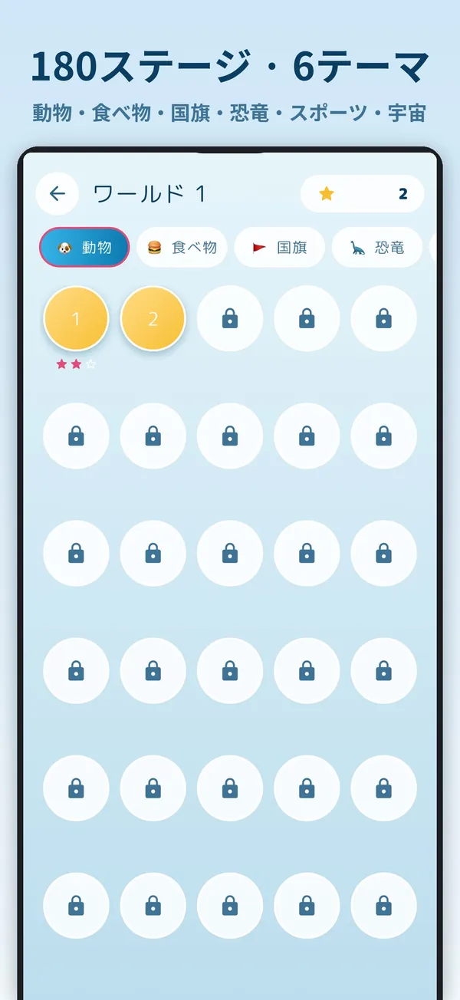
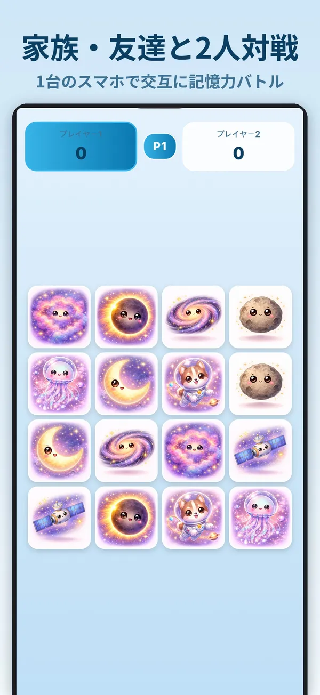
혼자서, 매일, 둘이서Solo, daily, or with a friendひとりで、毎日、ふたりで
스테이지를 깨는 클래식 모드 말고도 하루 5분씩 즐길 거리가 있습니다.Beyond the Classic stages, there's something to play in five minutes a day.ステージを進めるクラシックモードのほかにも、1日5分で遊べるモードがあります。
클래식 모드Classicクラシックモード
6개 월드, 180개 스테이지. 카드는 6장에서 30장까지 늘고, 11번째 스테이지부터 시간 제한이 붙습니다. 걸린 시간과 실수에 따라 별을 최대 3개 받습니다.Six worlds, 180 stages. Boards grow from 6 to 30 cards, a time limit kicks in at stage 11, and you earn up to three stars based on time and mistakes.6ワールド・180ステージ。カードは6枚から30枚まで増え、ステージ11から制限時間がつきます。ミスと時間に応じて最大3つの星がもらえます。
데일리 챌린지Daily Challengeデイリーチャレンジ
매일 새 보드가 하나 나오고, 전 세계 플레이어가 같은 보드로 겨룹니다. 오늘의 랭킹과 연속 클리어 기록이 남습니다.A new board every day — the same one for every player worldwide. See today's ranking and keep your clear streak going.毎日新しいボードが1つ登場し、世界中のプレイヤーが同じボードで競います。今日のランキングと連続クリア記録が残ります。
주간 챌린지Weekly Challenges週間チャレンジ
퍼펙트 클리어, 안개 속 기억, 잔상, 블라인드 등 6가지 과제 중 매주 3개가 나옵니다.Each week brings three of six challenges, such as Perfect Clear, Foggy Memory, Afterimage and Blind.パーフェクトクリア、霧の中の記憶、残像、ブラインドなど6種類の課題から毎週3つが出題されます。
타임어택Time Attackタイムアタック
60초 안에 최대한 많이 맞추세요. 3번 연속 맞히면 점수가 1.5배(콤보), 틀리면 남은 시간이 3초 줄어듭니다. 주간·월간·전체 랭킹이 있습니다.Match as many pairs as you can in 60 seconds. Three matches in a row earn a 1.5× combo bonus; a miss costs three seconds. Weekly, monthly and all-time rankings.60秒でできるだけ多くそろえましょう。3回連続でそろえるとコンボで得点1.5倍、ミスすると残り時間が3秒減ります。週間・月間・総合ランキングがあります。
무한 모드Endlessエンドレスモード
6장에서 시작해 판을 깰 때마다 카드가 늘어납니다. 시간 제한은 없고, 실수가 10번 쌓이면 끝납니다.Start with six cards and get more each time you clear a board. No time limit — the run ends at ten mistakes.6枚から始まり、クリアするたびにカードが増えます。制限時間はなく、ミスが10回たまると終了です。
2인 대전Versus対戦モード
한 기기로 두 사람이 번갈아 뒤집습니다. 짝을 맞추면 점수를 얻고 한 번 더 할 수 있습니다. 가족이나 친구와 함께하기 좋습니다.Two players take turns on one device. Make a match and you score and go again — great with family or friends.1台の端末で交代にめくります。ペアをそろえると得点し、もう1回めくれます。家族や友だちと遊ぶのにぴったりです。
커스텀 게임Custom Gameカスタムゲーム
카드 배열, 테마, 시간·실수 제한, 특수 규칙을 직접 골라 1인 또는 2인으로 즐깁니다.Pick the board size, theme, time and mistake limits and special rules yourself, for one or two players.カード配列、テーマ、時間・ミス制限、特殊ルールを自分で選んで、1人または2人で遊べます。
카드 스킨과 아이템Card skins and itemsカードスキンとアイテム
게임에서 모은 코인으로 카드 뒷면 스킨 7종과 힌트·시간 추가·실수 초기화 아이템을 삽니다. 현금 결제는 없습니다.Spend coins earned in play on seven card-back skins and on Hint, Time Boost and Reset Mistakes items. Nothing costs real money.ゲームで集めたコインで、カード裏面のスキン7種とヒント・タイム追加・ミスリセットのアイテムを買えます。課金はありません。
업적과 통계Achievements and stats実績と統計
콤보, 퍼펙트 클리어, 데일리 챌린지 연속 클리어 등 업적 18개와 월드별 진행 상황을 확인합니다. 라이트·다크 화면을 지원합니다.Track 18 achievements — combos, perfect clears, Daily Challenge streaks — and your progress in each world. Light and dark themes included.コンボ、パーフェクトクリア、デイリーチャレンジ連続クリアなど18個の実績と、ワールドごとの進み具合を確認できます。ライト・ダーク表示に対応しています。
자주 묻는 질문Questionsよくある質問
무료인가요?Is it free?無料ですか？
네. 모든 모드와 스테이지를 무료로 즐길 수 있고, 광고로 운영됩니다. 앱 안에서 결제하는 상품은 없습니다. 처음 5개 스테이지에는 전면 광고가 나오지 않습니다.Yes. Every mode and stage is free and supported by ads; there are no in-app purchases. The first five stages show no full-screen ads.はい。すべてのモードとステージを無料で遊べ、広告で運営しています。アプリ内課金はありません。最初の5ステージでは全画面広告は表示されません。
계정이 필요한가요?Do I need an account?アカウントは必要ですか？
아니요. 회원가입 없이 바로 시작합니다. 랭킹에 기록을 올릴 때만 익명 로그인을 사용하고, 랭킹에 보일 닉네임은 직접 정합니다.No. You can start right away without signing up. Rankings use an anonymous sign-in, and you choose the nickname shown there.いいえ。会員登録なしですぐに始められます。ランキングに記録を送るときだけ匿名ログインを使い、表示されるニックネームはご自身で決めます。
어떤 언어를 지원하나요?Which languages does it support?対応言語は？
한국어, 영어, 일본어를 지원합니다.Korean, English and Japanese.日本語、英語、韓国語に対応しています。
아이폰에서도 쓸 수 있나요?Is it on iPhone?iPhoneでも使えますか？
네. 구글플레이와 앱스토어 모두에서 받을 수 있습니다.Yes. It's on both Google Play and the App Store.はい。Google Play と App Store の両方からダウンロードできます。
후반 스테이지가 너무 어려워요.The later stages are too hard.後半のステージが難しすぎます。
설정에서 특수 규칙을 끄면 클래식 모드가 쉬워집니다. 상점의 힌트·시간 추가 아이템도 도움이 됩니다.Turn off special rules in Settings to make Classic easier. Hint and Time Boost items from the shop also help.設定で特殊ルールをオフにすると、クラシックモードがやさしくなります。ショップのヒント・タイム追加アイテムも役立ちます。
하루 5분, 카드 한 판Five minutes, one board1日5分、カードを1回
무료로 설치하고 오늘의 데일리 챌린지부터 시작해 보세요.Free to install. Start with today's Daily Challenge.無料でインストールして、今日のデイリーチャレンジから始めましょう。